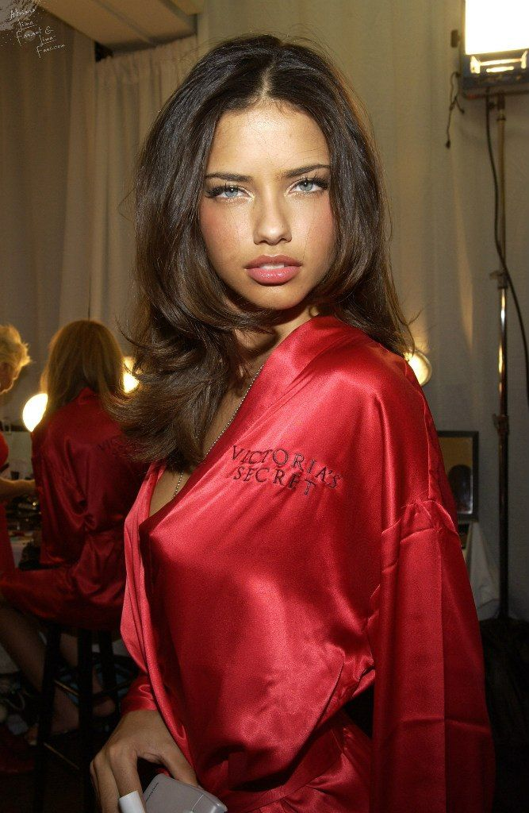

Victoria's Secret, la remontée
Il y a quelques années, la marque semblait finie : dépassée, critiquée, rangée au rayon des souvenirs. Et pourtant Victoria's Secret revient. Son histoire, loin d'être une simple affaire de lingerie, est le miroir fidèle d'une société qui a radicalement changé de regard sur les corps et la beauté.

La chute d'un empire
Pendant les années 2000, Victoria's Secret régnait sans partage. Son défilé annuel était un événement planétaire, diffusé dans le monde entier, et ses mannequins des icônes mondiales. La marque incarnait un idéal, un rêve, une image de la féminité que des millions de gens achetaient sans discuter.
Puis le monde a changé, et la marque n'a pas suivi. Ce qui faisait rêver a commencé à mettre mal à l'aise. Un seul modèle de beauté, toujours le même : grand, mince, lisse, inaccessible. Ce qui passait pour un idéal est devenu un diktat, et le public a cessé de l'accepter.
Les critiques se sont accumulées : manque de diversité, image irréaliste, discours décalé, direction accusée de mépris. Le célèbre défilé a fini par être annulé, et la marque s'est retrouvée du mauvais côté de l'histoire. En quelques années, le symbole du glamour est devenu le symbole d'un monde révolu.
Le temps du doute
Reconnaître qu'on s'est trompé n'est jamais simple, surtout pour une marque aussi iconique. Victoria's Secret a dû faire son autocritique en public, sous le regard du monde entier.
S'ensuivit une longue traversée du désert : rebrandings hésitants, messages confus, tentatives maladroites de se racheter une image. La marque cherchait sa place dans un monde qui ne voulait plus d'elle, tâtonnant entre son passé glorieux et un présent qui la rejetait.
Conviction ou survie ?
Toute la question de la remontée tient là. La marque multiplie désormais les corps, les histoires, les visages différents. Elle affiche une diversité qu'elle avait longtemps refusée, change de ton, change d'égéries. Mais beaucoup se demandent si ce virage vient d'une vraie conviction ou d'un simple calcul de survie.
C'est le dilemme de toutes les grandes entreprises face au changement social : suivent-elles leurs valeurs ou leur chiffre d'affaires ? La frontière est floue, et le soupçon toujours présent. Difficile de savoir si une marque change parce qu'elle y croit ou parce qu'elle y est forcée.
Et au fond, le public se moque parfois de la réponse. Ce qu'il exige, c'est le résultat. Qu'une marque change par idéal ou par intérêt, le résultat reste une image plus juste, plus large, plus représentative du monde réel. Et c'est peut-être ça, la vraie victoire : peu importe la raison, pourvu que le changement soit réel.
Le retour du spectacle
La marque a aussi compris ce qu'elle avait perdu : le sens de l'événement. Le grand show revient, mais avec une promesse différente. Garder la magie du spectacle sans l'idéologie d'avant, voilà l'équilibre à trouver.
Ramener la fête tout en changeant le message, séduire les nostalgiques sans braquer les nouvelles générations : la ligne est fine. Mais si quelqu'un peut transformer un symbole du passé en marque du présent, c'est bien une maison qui a déjà régné une fois.
Une leçon pour toutes les marques
L'histoire de Victoria's Secret est celle de toutes les marques qui doivent évoluer ou disparaître. Dans un monde qui change vite, aucune image n'est éternelle, aucun succès n'est acquis pour toujours.
Le vrai luxe, aujourd'hui, c'est peut-être de savoir se remettre en question. Les symboles qui refusent de bouger deviennent des reliques ; ceux qui acceptent de se transformer, parfois douloureusement, s'offrent une seconde vie. Victoria's Secret joue aujourd'hui exactement cette partie, et le monde entier regarde si elle peut la gagner.
On croyait la marque enterrée par son époque. Elle essaie, aujourd'hui, de renaître avec elle.